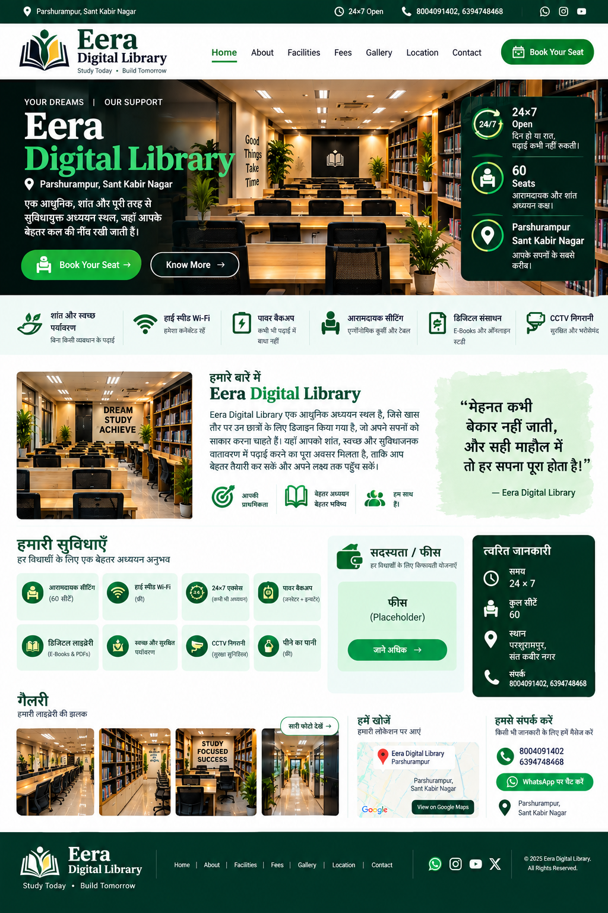

Quiet Study Area
Peaceful environment for focused study.
24×7 • 60 SEATS
A peaceful and focused digital library for students.
WhatsApp Us
Peaceful environment for focused study.
Comfortable space for digital learning.
Convenient seating for long study sessions.
Fee details will be updated soon.
📞 8004091402 • 6394748468
📍 Parshurampur, Sant Kabir Nagar, Uttar Pradesh
Google Maps